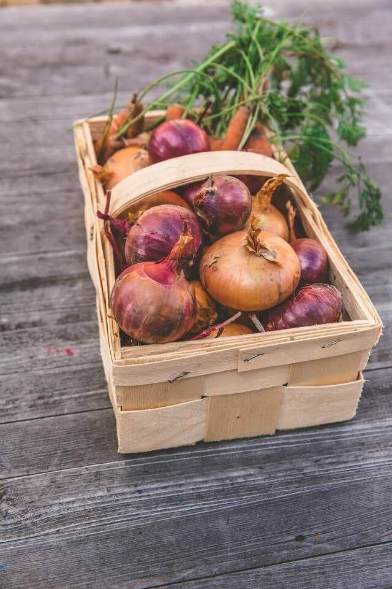
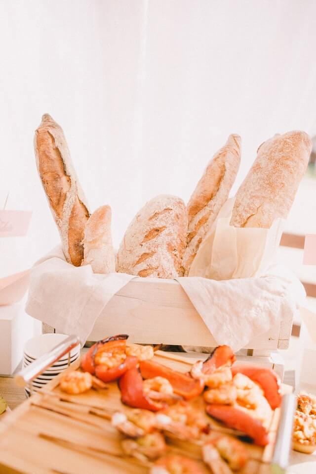
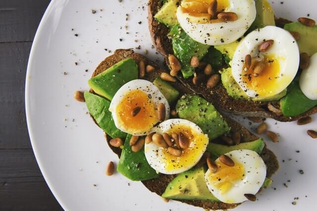

Basic Grocery List
Produce
- Onions

- Garlic
- Fruit 🍉 🍊
- Vegetable 🥦 🥕
Tinned & Dried Produce
- Pulses
- Chopped tomatoes
- Soup
- Fruit, nuts, and seeds
Grains and Bread
- Pasta
- Rice
- Bread

Sweet breads!!
- All purpose flour
- Breakfast cereal
Dairy & Eggs
- Milk
- Eggs

egg's
- Cheese
- Yogurt U+1F600
🐧🐧🐧🐧🐧🥕